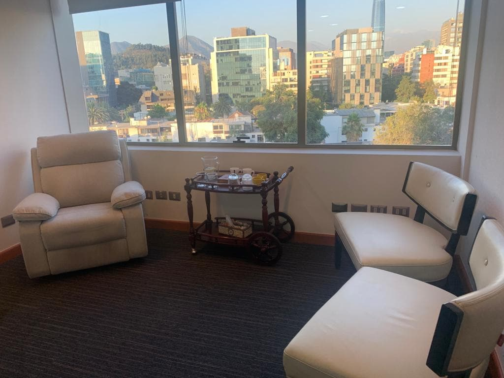

Riesel Muñoz MuñozHace 8 meses
Una excelente atención que ayudó a nuestras necesidades. Muchas gracias Sandra por tu total apoyo.

Presencial y Online
¿Sienten que la relación cambió?
Si las discusiones son frecuentes, existe distancia emocional o están considerando separarse, la terapia de pareja puede ayudarlos a recuperar claridad y construir nuevas formas de relacionarse.
Centro Psicológico con 22 años de trayectoria · +30.000 parejas atendidas · Psicólogos de pareja especializados
Mientras más tiempo pasa, más difícil se vuelve reparar el daño y sanar las heridas de la relación.
Terapia de Pareja para: Pololos, novios, convivientes, matrimonios
Horario: Lunes a Viernes de 10:00 a 21:00 hrs · Boletas reembolsables por Isapre y Seguro.
Las personas que consultan a tiempo tienen mejores resultados.
Pedir ayuda no es admitir un fracaso: es una decisión de cuidado. No buscamos culpables, sino entender el recorrido que los trajo hasta aquí. Lo que viven duele, y es algo que se puede trabajar en terapia.
Cada conversación parece terminar en conflicto. Sienten que uno de los dos siempre quiere ser «el dueño de la verdad» y se ha vuelto imposible reconocer o aceptar las diferencias del otro sin pelear.
Viven bajo el mismo techo, pero se comportan como dos extraños. La distancia ha crecido tanto que sienten que el dolor o la alegría del otro ya no les afecta. Cada día se sienten más alejados.
La base de la relación se debilitó. Ya sea por el desgaste del día a día, promesas rotas o la herida profunda de una infidelidad, viven con una inestabilidad y un miedo constante que no los deja avanzar.
Ya no se trata solo de «seguir juntos», sino de la dolorosa pregunta: «¿Hacia dónde vamos?». Sienten que sus motivaciones y formas de ver la vida se han distanciado, generando una frustración constante.
Todo nuestro equipo de psicólogos especialistas en terapia de pareja y familia trabaja bajo la dirección de:
Especialista en terapia de pareja y familia.
Especialista en terapia de pareja y familia.
Reserva ahora tu sesión inicial. Cuanto antes comiencen, mejores resultados.
Una ubicación céntrica, cómoda y accesible para parejas que viven o trabajan en Santiago.